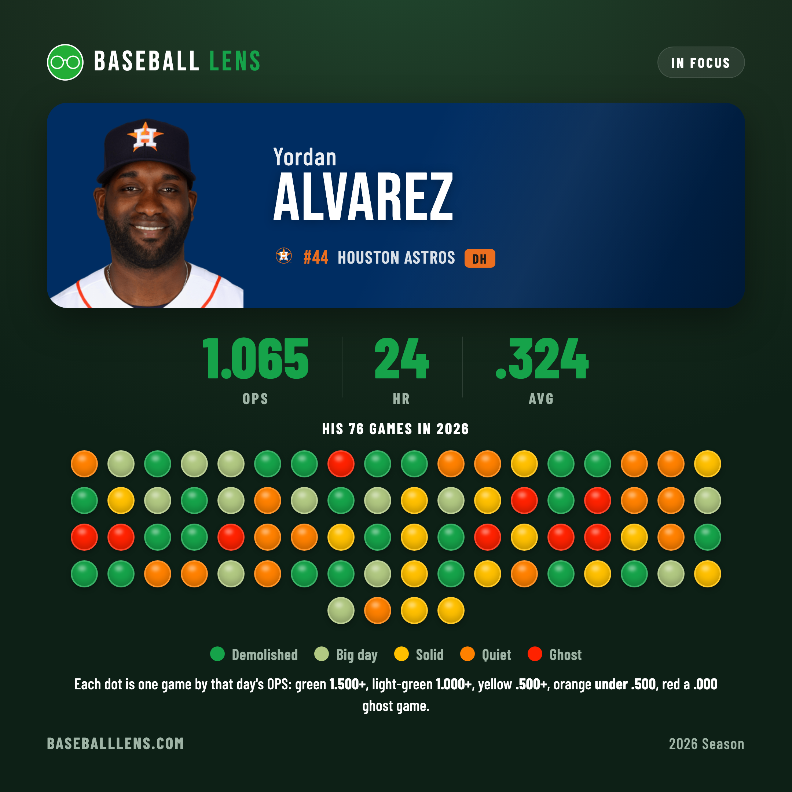
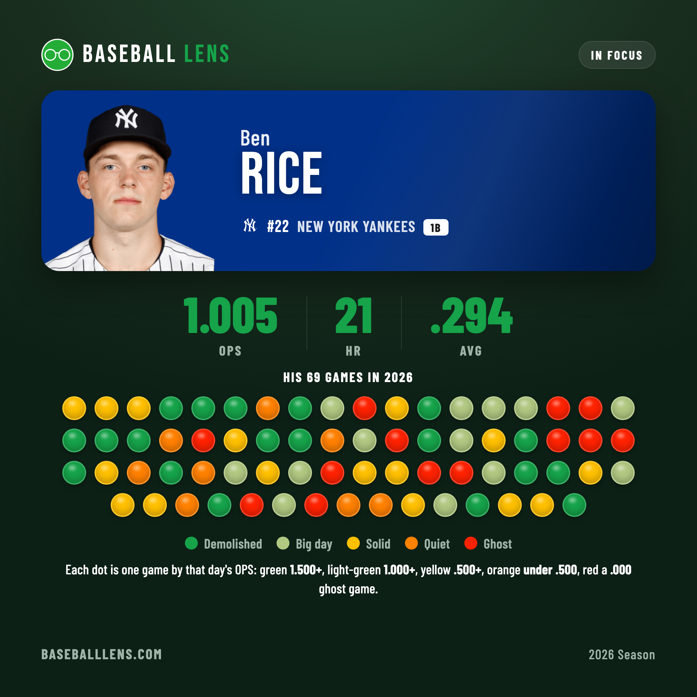
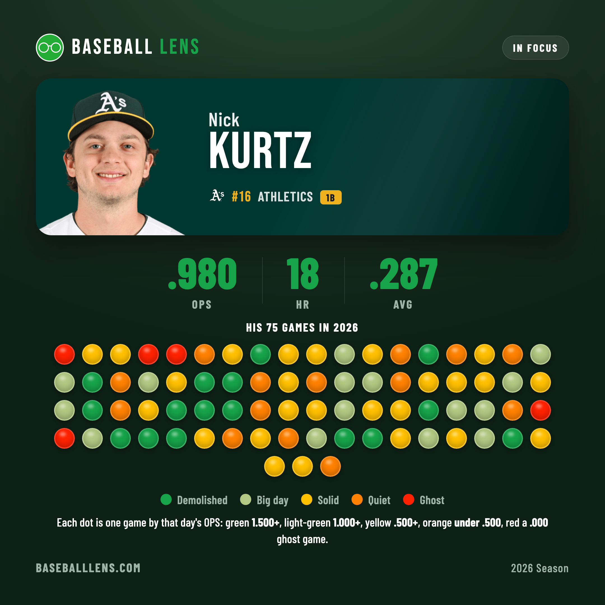
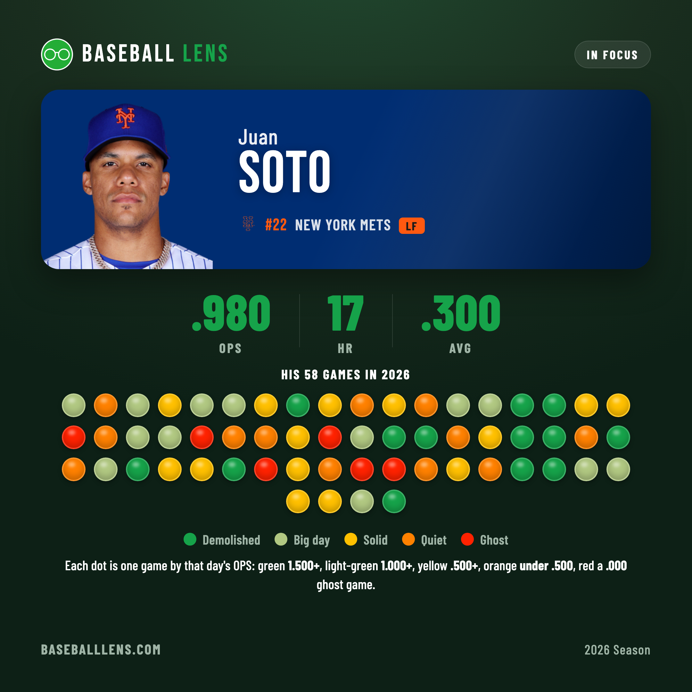
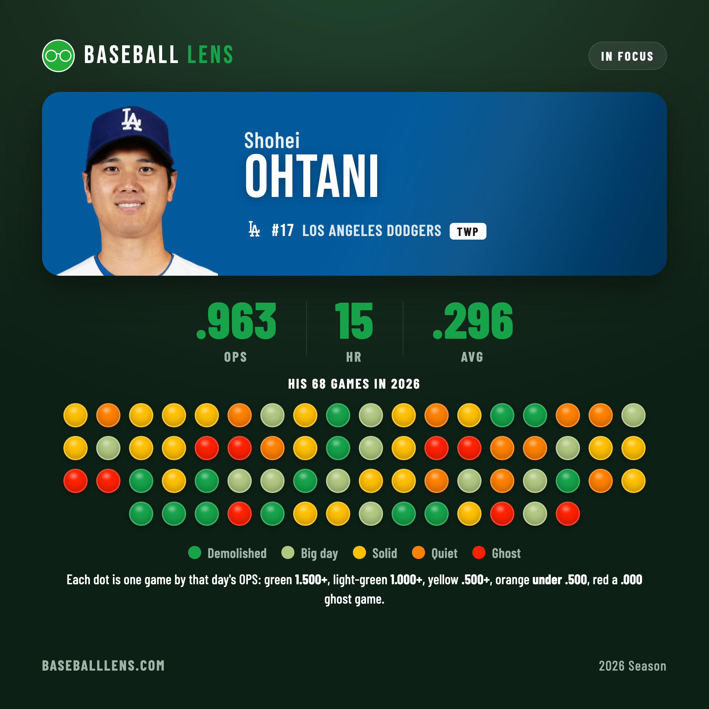

A Season in Dots
A leaderboard gives you one number for a whole season. We wanted the texture underneath it — so we colored every single game the five best hitters in baseball have played, one dot apiece.
Take the top five names on the OPS leaderboard, pull every game they've played, and grade each one by that day's OPS on a five-color scale. What you get isn't a ranking — it's a fingerprint. The season-long number is the same story every morning; the dots are the story night to night, and no two of these five tell it the same way.
- 1.500 or more a demolition day — three hits, or a homer with more
- 1.000–1.499 a big day
- .500–.999 a solid day
- up to .499 a quiet day
- .000 a ghost game — the pure 0-fer, nothing on the ledger
OPS is on-base plus slugging. A walk keeps you out of the red; only a night with no hit and no time on base shows up as a ghost.
1. Alvarez — the widest green base
The league's OPS leader owns the most green of anyone here: 23 demolition days out of 76, nearly one game in three. The high-water mark came in Seattle on May 14 — 3-for-3 with a double, a homer and a walk, a flawless afternoon. There are nine ghost games buried in the strip too, but they sit early; Alvarez hasn't been blanked in his last 15, and June reads a tidy 1.117. A wide base of big nights is exactly what a 1.065 is made of.

2. Rice — the jagged one
Rice's strip is the streakiest of the group. His 19 demolition days sit right alongside a group-high 13 ghosts, with not much settling in between — his longest run without a blank is just nine games, the shortest of the five. The dots arrive in bursts rather than a steady hum. The bat has cooled lately (.837 in June, two ghosts in his last 15), but on a green day he's as loud as anyone in baseball.

3. Kurtz — the metronome
If Rice is jagged, Kurtz is a metronome. His is the yellow-heaviest strip here — 25 solid days — and far and away the cleanest: just five ghosts all year, and a 48-game stretch without a single one, the longest run in the group by a mile. He isn't only steady, he's surging. Eight homers in June, no ghosts in his last 15, and a two-homer, five-RBI afternoon in Pittsburgh on the 15th. The .980 keeps climbing.

4. Soto — the same level, fewer dots
Soto has reached the same .980 in the fewest games — 58, a dozen or more behind the others — and his strip is the most balanced of all, split almost evenly across the top three colors with only six ghosts. He closed the recent homestand with a two-homer night against Philadelphia on June 18, the kind of green dot a season leans on. Fewer chances, no wasted ones.

5. Ohtani — all-or-nothing, lately
Ohtani's full-season strip leans yellow — 21 solid days, a lot of quietly productive nights — but the recent run has gone to the extremes. His last 15 games hold six demolition days and three ghosts and very little in between, the most volatile stretch of the five. The booms are winning the argument: a 1.244 June, five homers, and a bat pointed up.

Five shapes
Same neighborhood at the top of the leaderboard, five different ways of getting there — a green-heavy base, a jagged burst, a metronome, a balanced few, and a recent boom-or-bust. The number is the headline. The dots are the paragraph underneath it.
Stats via the MLB Stats API. The day-by-day OPS scale and colors are Baseball Lens's own. Numbers through June 20, 2026.